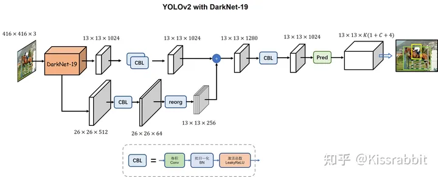

03 YOLOv2
YOLO v2
1.相比于YOLO v1的改进
YOLO v2同样也是单阶段的目标检测模型，相对于YOLO v1，它主要做了以下改进：

1.添加了BN层：在所有的卷积层后都使用BN层进行归一化，然后加上Leaky ReLU激活函数
2.引入了锚框，成为了Anchor Based模型，在每个gird上，都生成K个锚框，对于每个锚框都独立预测其类别、坐标、置信度，故head输出的特征图的大小为H x W x K(4+1+C)
所谓锚框就是一个先验框，加入锚框后使得模型预测bbox时更容易预测，但是训练之前需要人为给定先验框的大小，这个大小通常是需要对数据集做聚类分析得到的。
3.删除了全连接层，改为全卷积的网络模型：由于是全卷积的结构，输入图片的大小可以发生变化，但需要是32的倍数(因为网络整体的stride=32)
4.将BackBone从YOLOv1的GoogleNet改成了DarkNet19
5.使用更高分辨率的特征：在YOLOv1中，只使用BackBone输出的最后一个特征图来进行后边的检测，虽然该特征图具有较深的语义信息，但其尺寸较小，空间信息较少，因此，YOLOv2使用了BackBone中间一层输出的特征图，降采样后与最后一层的特征图融合（将二者在通道的维度上进行拼接），然后在进行检测。
6.多尺度训练：上面提到了YOLOv2是全卷积的网络，因此接收不同尺寸的输入，利用这一特点，在将图片送入模型之前，把它resize成不同的尺寸来进行训练。通过使用图像金字塔的操作，网络能够在不同尺寸下去感知同一目标，从而增强了其本身对目标尺寸变化的鲁棒性，如图8所示。YOLO作者便将这一思想用到了模型训练中，以提升YOLO对物体的尺度变化的适应能力。
既然已经使用了多尺度训练，YOLOv1模型不仅可以使用416这个尺寸去做测试，也可以使用更大的图像尺寸去做测试。于是，作者又使用544尺寸去测试mAP，意料之内地得到了更高的测试结果：78.6% mAP。
2.训练标签的制作
由于YOLOv2是
Anchor Based模型，其训练标签的制作和YOLOv1那种Anchor Free的模型还是有所不同的
2.1基于IOU的正样本的选择
在YOLOv1中，正样本是gt_box所落在的那些Grid。
而在YOLOv2中，网络输出的那个Tensor上的每个Grid又有K个Anchor Box，所以其正样本是Anchor Box维度的，而不是Grid维度的，==也就是说这里正负样本指的是具体的先验框，而不再是YOLOv1中的Grid了。==
具体来说，YOLOv1的gt_tensor的维度是[H,W,C]，而YOLOv2的gt_tensor的维度是[H,W,num_anchors,C]。在YOLOv1中，正样本只需要确定[H,W]这2维的坐标，而YOLOv2中，正样本需要确定[H,W,anchor_idx]这3维坐标。
==具体正样本的选择方法：==
在YOLOv1+中，由于每个网格只预测一个边界框，无需做选择，但现在每个网格处有5个先验框，需要我们从中选择适合做正样本的先验框。选择原则非常简单，首先，计算这5个先验框与此处的真实框之间的IoU，分别记作 IoUB1 、IoUB2 、IoUB3 、IoUB4和 IoUB5，然后设定一个IoU阈值 θ 。接下来，我们会遇到两种情况。
情况1：所有的IoU都小于阈值。此时，为了不丢失掉这个真实样本，我们选择这当中IoU值最大的那个先验框，不失一般性的，我们假设是 B1 ，则这个先验框 B1 将作为正样本，然后使用公式(1)至(4)计算出边界框的位置参数的学习标签。
（1） tx=cxstride−gridx
（2）ty=cystride−gridy
（3） tw=log(wspw)
（4）th=log(hsph)
其中， ws=wstride ，hs=hstride，即将真实框的宽高 w 和 h 映射到网格的尺度，因为我们的先验框的尺寸就是在网格的尺度上，如果不做此映射，很显然是有问题的。然后，其余的先验框 B2 至 B5 全部作为负样本。不同于正样本，负样本只参与边界框的置信度损失计算，且学习标签是0，不参与类别损失和边界框的 tx 、 ty 、 tw 和 th 的损失计算。
情况2：有多个IoU大于或等于阈值 θ 。不失一般性的，我们假设是 B1 、 B2 和 B3 都高于阈值θ ，其中B1和真实框计算出的 IoUB1 最大，则这个先验框B1将作为正样本，使用公式(1)至(4)计算出边界框的位置参数的学习标签。而 B2 和 B3 被忽略，不赋予学习标签，也不参与任何损失计算，尽管他们和真实框计算出的IoU都大于阈值θ。剩下的 B4 和 B5 则作为负样本。情况2的操作其实是借鉴了后续的YOLOv3的做法。
3.损失函数的计算
- 正样本：计算
conf_loss、box_loss、cls_loss - 负样本：计算
conf_loss - 忽略的样本：啥都不计算
3.1如何做到对应样本计算对应的损失？
（1）在def generate_txtytwth(gt_label, w, h, s, anchor_size, ignore_thresh):这个函数中，将被忽略的样本的weight这个变量全设为-1，而负样本的weight不用人为设置，本身就是0.
（2）在gt_creator()制作正样本时，
将gt_tensor中weight对应位设置成-1
（3）计算损失时，通过这个weight来不计算负样本和忽略样本的box_loss、cls_loss损失
（4）对于忽略样本，也不计算conf_loss